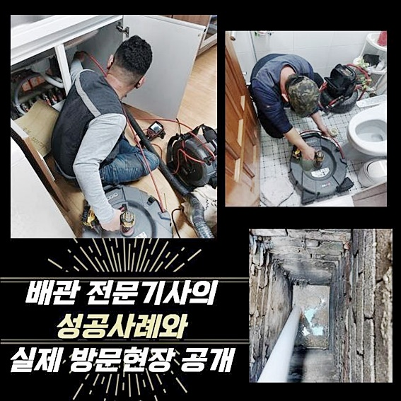
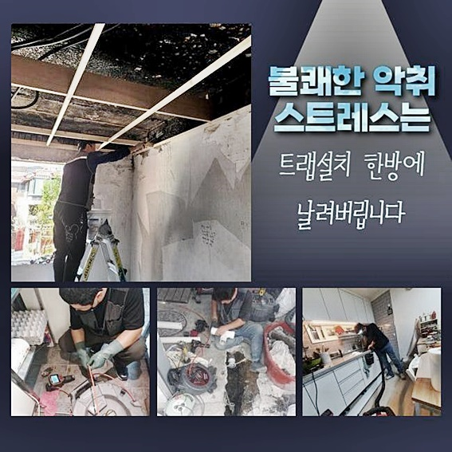
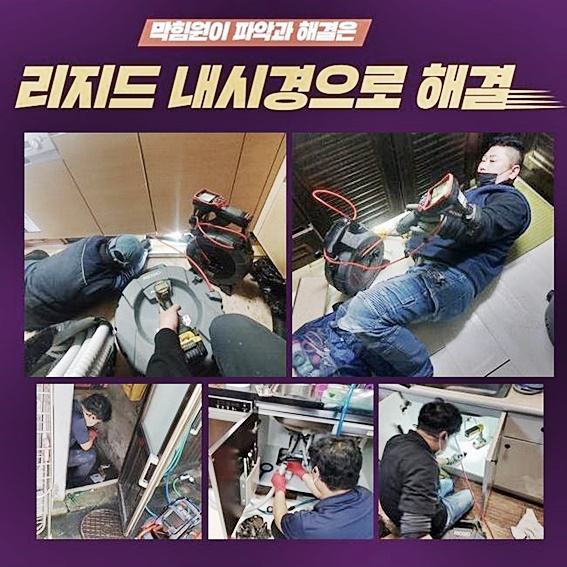
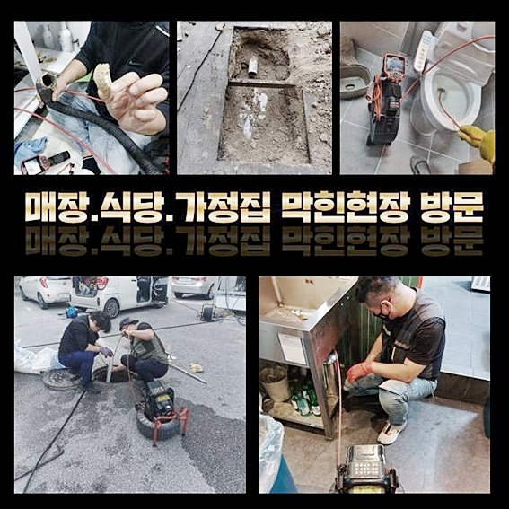
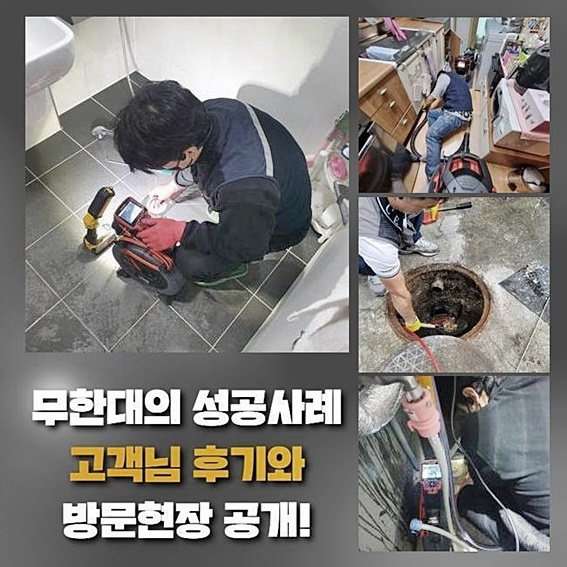
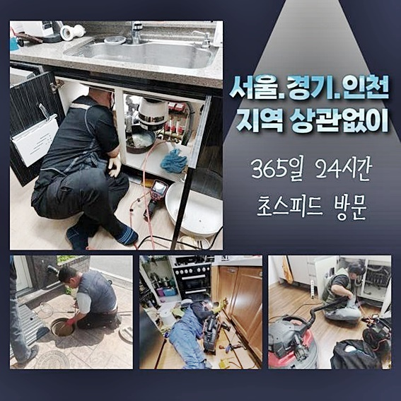
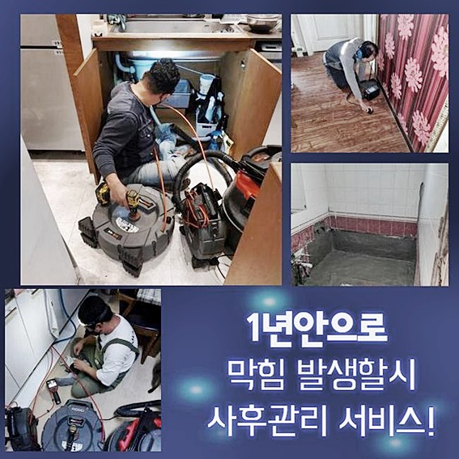

🏠 하남 상산곡동씽크대배수구역류 춘궁동 맨홀역류 누수탐지
용인시 처인구 누수수리 전문 시공 후기

📋 작업 개요
- 위치: 용인시 처인구, 수원시 영통구, 화성시 동탄
- 서비스 유형: 누수수리, 고압세척, 내시경점검
- 작업 일시:
- 업체명: 하수구수사대 (010-5615-2118)
🔍 문제 상황
하남 상산곡동씽크대배수구역류 춘궁동 맨홀역류 누수탐지
주거지에서 하수시설들이 역류되는 문제들이 발생되었다는 상황을 듣고서 즉각 방문했는데요
메인집수라인이나 가지배관들에 증세들이 야기되면 대부분의 세대들에서 피해들을 입게될 가능성들이 짙어서 저희의경우 불편이 퍼져나가는걸 막기위해 당일출동을 기반해서 조속하게 찾아뵌답니다
지금부턴 수리해드렸던 한 고객님의 사례로 배수장애가 생겨났을 때 작업하는 과정과 원인제거 등의 과정들을 슬러지들을 설명할게요!
도착하고서 증상의 상황들을 확인한 결과 꾸준히 관리자체가 실시되지 않은 탓에 이미 배수장애가 확장된 상황이라는걸 알았는데요
심지어 막히게된 까닭으로 역류들이 줄지어 생기며 수도이용을 할 수 없어 불편을 호소했죠
쉽게 해결될 통수 오류의 현장일 시 원활한 작업으로 문제들을 완화시키겠지만 때를 놓칠 시엔 범위들이 커지면서 작업해야하는 범위까지 넓어져요
통수오류가 생기는 이유라 함은 안에 축적된 슬러지들을 꼽게됩니다

🔎 원인 분석
💡 전문가 진단: 정밀 진단 장비를 사용하여 슬러지의 고착 여부를 판명하고 타격/세척 작업을 실시했습니다.
하수도는 전체적인 배수에 꼭 필요한 시설이며 적절한 부위에 매립해주어 물을 쓰는 시점에 편안히 물들을 사용할 수 있게 하는것입니다
배수관로는 배수관로는 여러가지의 기능을 맡고있으며 화장실과 같은 데에서 사용되는 하수가 하수관을 통하여 흐르는데 배수되는 과정들에 야기된 오염원이 흘러가며 막히는 상황을 일으키게 되는거죠
오수라인 결함도 소변기와 같은 시설로 투입된 잔해물이 자리를 잡는 바람에 생기게되요
통수들이 제대로 이뤄지지않아 여러 부위에 정체 상황들이 생겨난 등 화장실쪽에서 불현듯 악취까지 나고있을 시 통수장애들이 발발했다는 사안이라는 걸 아신 후에
곧장 전문가를 불러 이유를 알아내어 적당한 대처로 세척들을 진행시켜야해요
배수관의 상태를 보니 배수관의 심층부에서부터 이물질들이 쌓이게 된 걸 원인들로 문제들이 불거진 것으로 추측했죠
그렇지만 하수시스템 오류는 여러가지의 원인들로 발생되는 경우도 있기때문에 내시경을 삽입해 어디서 잔재가 존재하는지 명확히 찾아내서 작업해주는게 적절한 단계에요
내시경도구엔 모니터부와 연결되있기때문에 배수관의 컨디션을 시각적으로 살필 수 있고 원인의 부위들과 이물들의 양상들도 파악가능하기에 방향들을 수립할 때 긍정적 영향을 미치죠

🔧 작업 과정
내시경장치를 가용하여 시설물을 관찰하니 예측한대로 배수관과 메인집수 설비에 상당한 이물이 축적된 것을 목격했죠
또한 배관 중간중간 자리하고있는 잔해의 경우일땐 심층부에서 산패가 진행될정도로 심한 모습을 보이고 있었어요
배수장애는 전동스프링기나 샤프트기기를 가용시켜 고착물을 분쇄해내서 간단히 해결되는 때도 있으나 지금의 경우처럼 곳곳에 잔해가 축적되어 있을 경우 고압수청소로 기름때를 제거시키는것이 신속한 방법인데요
고압수청소의 경우 배수장애를 바로 잡는데 효과가 있는 결과들을 보이지만 때로는 작업비가 걱정된다는 염려로 시도하지 않는 사례들을 자주 보았습니다
전문가용 장비와 함께 실력이 필요하므로 간단한 장비들을 운용하는거보단 일정한 작업비가 생겨나는 것은 맞으나
통수장애들이 발발했을 경우 반복해서 장치를 투입하는 것보다는 고압수청소를 이행해주는것이 배수관을 세척할때 빠른 방식입니다
때문에 고압수청소를 진행시켜야된다는 전문진의 조언이 있다면 꾸준한 결함의 고리를 끊고자하시면 진행해보는걸 권해드립니다
배수가 안되는 증상을 시정하기위한 청소는 컨디션과 같은 요소들에 있어 계획은 차이가나지만 대개 외측에 자리한 하수관에 노즐선을 사용해주며 유수의 반대방향을 통해 세척하죠
외부하수구로부터 세척을 이행시키는건 하수도에 잔존한 이물을 완전하게 청소시키는것이 목적이고 고압청소의 부위를 조금씩 넓힌다면 하수구들을 처음의 모습과 동일하게 돌려놓을 수 있어요
반대로 하수관로는 사용하는 까닭이나 위치 특성에 비롯되어 재질들이 다를 수 있으며 시간이 길어진다면 내구성들이 하락하게 되는데요
이러한 내구성을 감안하지않고서 무리한 방법들로 진행시키면 파손을 불러일으키니 작업을 이행하기 이전에 설치된 구조들을 관찰하고 위치에 따라서 적합한 압들을 가해주는게 필요하죠
이러한 디테일을 가지고있는 저희가 적당한 압들을 가해주며 반복되는 고압세척들을 시행하니 딱딱하게 굳어진 잔해들을 깨끗하게 없앴어요


✅ 작업 완료
워낙 잔해가 축적되었던 상태였으므로 역류될 현상까지 보였지만 그나마 의뢰자께서 조속하게 세척을 요청해 주셔서 걷잡을 수 없는 문제들로 불거지는것은 막았습니다
작업들이 완료되면 내시경기기를 사용하여 반복적인 점검들을 실시하며 점검 과정들에 추가 작업의 위치가 있을 때엔 장치를 추가로 사용하여 잔해가 일말도 잔존해있지 못하게 완전하게 청소해드리니 안심하세요!
막히는 장애가 성큼 나타났을때 신속히 전문가들의 해결책을 꾀하면 안정적으로 문제들을 잠재울 수 있죠
저희업체는 의뢰자께서 수도를 쓰지못해 고민하는 일 없이 언제라도 도울 준비들을 해놓고 있기에 부담없이 편히 의뢰해보세요




⚠️ 하수구 배관 막힘 예방 및 관리 가이드
- ✅ 머리카락, 비닐, 물티슈 등 물에 분해되지 않는 이물질은 절대 흘려보내지 마세요.
- ✅ 기름기 많은 식기는 설거지 전 키친타올로 먼저 기름때를 닦아내세요.
- ✅ 주기적으로 배수구에 뜨거운 물을 가득 부어주어 유지방 고착을 방지하세요.
- ✅ 작업 후 1년 이내 재발 시 무상 A/S 보증 서비스를 제공합니다.
💡 핵심 정리
- 확실한 장비 작업(내시경 점검 및 샤프트 스케일링)으로 원인을 뿌리 뽑습니다.
- 작업 후 1년 이내에 동일한 부위 재발 시 100% 무상 A/S 서비스를 보장합니다.
- 서울 · 경기 · 인천 전 지역에 24시간 언제든 긴급 출동할 수 있도록 항시 대기 중입니다.
❓ 자주 묻는 질문 (FAQ)
🚨 용인시 처인구 누수수리 문제로 고민이신가요?
정확한 원인 진단과 확실한 시공으로 재발 없는 해결을 약속드립니다.
24시간 긴급 출동 | 서울 · 경기 · 인천 전지역 | 1년 내 재발 시 무상 A/S